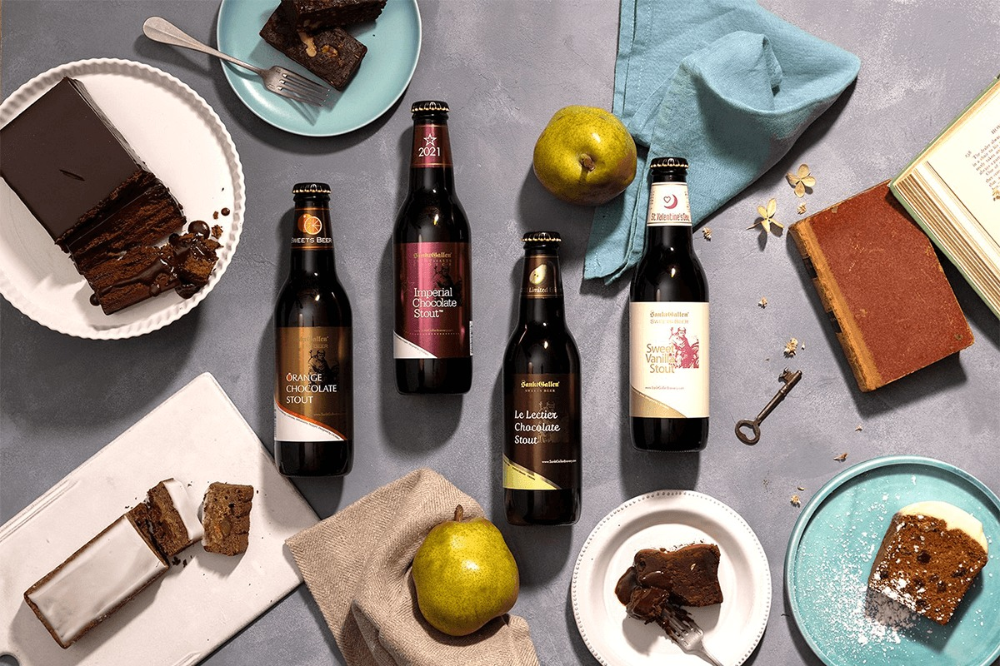
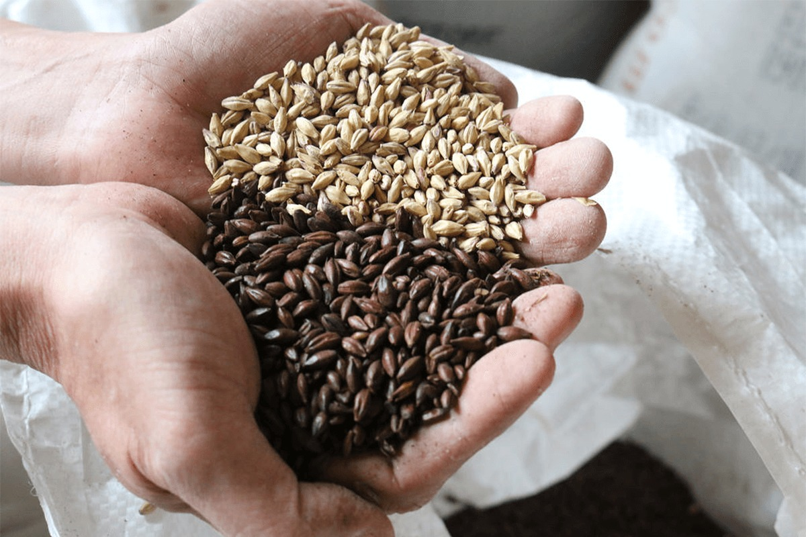
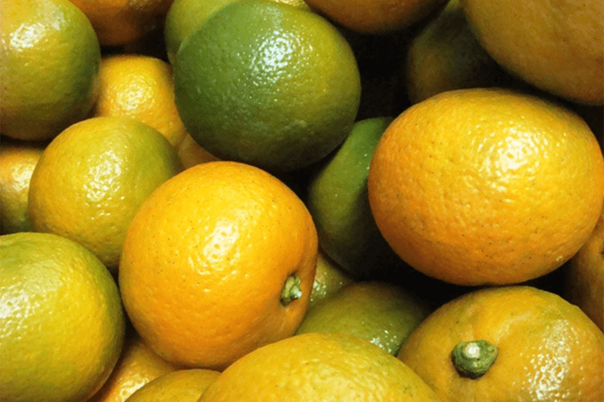
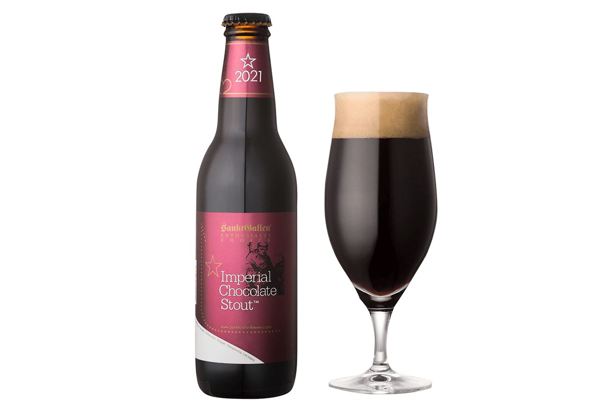
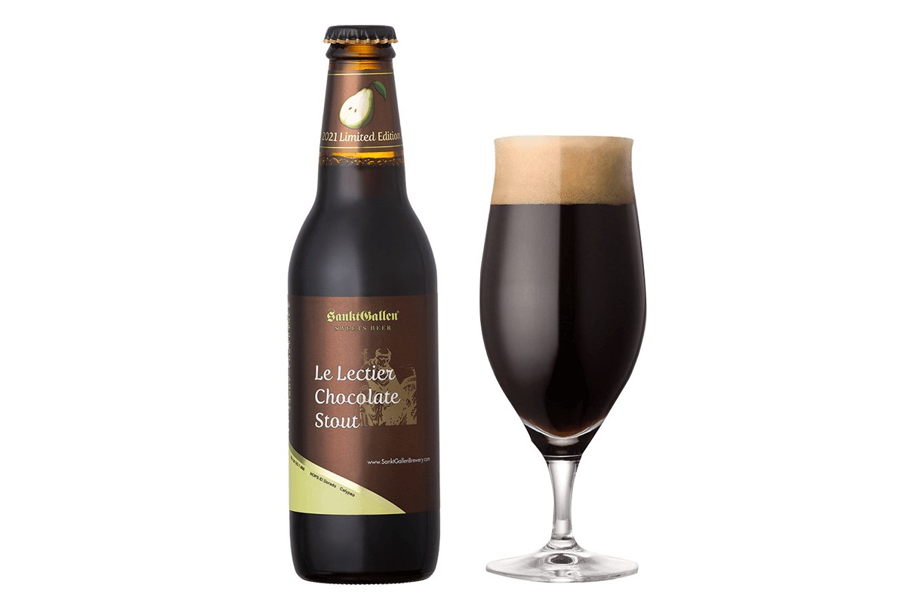
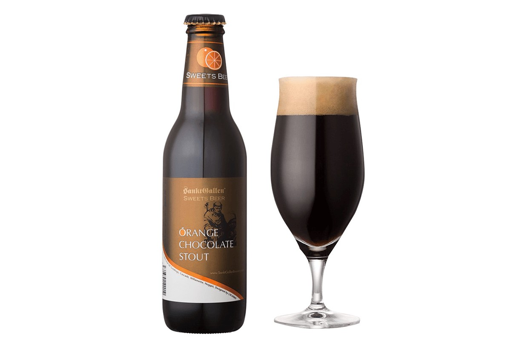
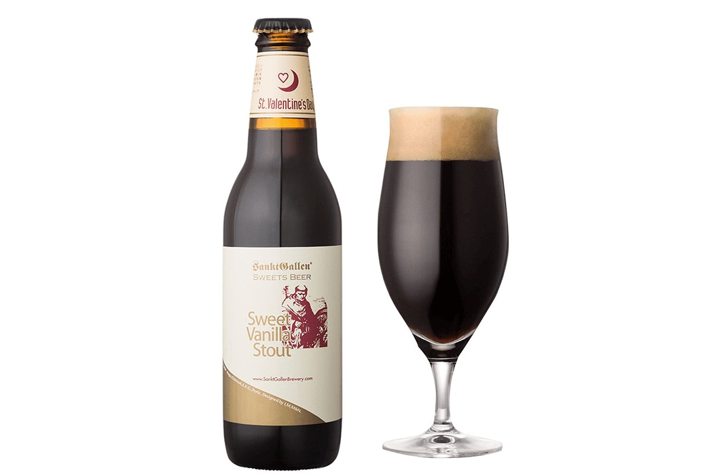

Префектура Канагава · Ацуги · пиво
SanktGallen из Ацуги: шоколадное пиво без грамма шоколада

В шоколадном пиве SanktGallen нет ни шоколада, ни ароматизаторов. Вкус горького какао пивовары из Ацуги получают из солода, обжаренного на грани подгорания, и варят такое пиво к каждому Дню святого Валентина с 2006 года.
Пивоварня
Крафт до моды на крафт
Город Ацуги лежит в центральной части префектуры Канагава. Здесь в 1996 году появилась пивоварня SanktGallen. Её считают одной из первых крафтовых пивоварен Японии: местное пиво она начала варить задолго до того, как в стране заговорили о крафте. Пиво варят глава компании и несколько сотрудников, а награды у пивоварни есть и с World Beer Awards, и с других международных конкурсов, где она не раз брала золото.
Самое известное её пиво в Японии называют просто «шоколадным». Это не сладкий напиток с добавкой конфет. Весь шоколадный вкус пивовары извлекают из обычного пивного сырья.

Базовый солод для обычного пива обжаривают примерно при 85 градусах. Для шоколадного берут солод, обжаренный примерно при 160 градусах, на грани подгорания. Зёрна становятся тёмно-коричневыми, а если раскусить такое зерно, оно горчит, как тёмный шоколад. Поэтому его и называют шоколадным солодом. От него пиво получает тёмный цвет, поджаристый аромат какао и горечь, которая напоминает то горький шоколад, то кофе.
Фрукты
Груши и апельсины, которые не попали на прилавок
Кроме тёмного пива SanktGallen весь год варит фруктовое. Фруктов кладут много, чтобы вкус и запах шли от самих плодов, а не от ароматизаторов. Часть из них пивоварня берёт у фермеров «с изъяном»: плоды с пятнами или неровной формы, которые нельзя продать в магазине. Фермеры получают деньги за урожай, который иначе пропал бы, пивоварня покупает фрукты дешевле, а еды выбрасывают меньше.

Так появились два шоколадных стаута с фруктами. Груши ле лектье для одного из них привезли из префектуры Ниигата, а померанцы дайдай для другого вырастили на фермах Югавары, курортного городка на юго-западе Канагавы. Фруктов в этих сортах больше, чем японские правила разрешают для пива, поэтому на этикетке они записаны как хаппосю, «пенный напиток». Солода в них при этом много, и налог на них такой же, как на обычное пиво.
Сорта
Четыре шоколадных стаута
Зимой 2021 года, к Дню святого Валентина, пивоварня выпустила сразу четыре шоколадных сорта. Главный из них варят с 2006 года.

«Империал шоколад стаут» стал в Японии почти синонимом шоколадного пива. Сырья в нём примерно втрое больше, чем в обычном тёмном пиве. Пена у него плотная, как у молочного коктейля, и совсем чёрная, а один из покупателей назвал его «горьким шоколадным тортом, который пьют». Крепость 9%, и, как вино, это пиво может выдерживаться до двух лет.
Сезонным сортом 2021 года стал «Ле лектье шоколад стаут» (7%) с редкой грушей ле лектье: на одну варку уходило около 350 кг груш, а вместо американских элевых дрожжей, которые шли во все шоколадные сорта с 2006 года, взяли бельгийские с ароматом зелёного яблока и сливы.


«Оранж шоколад стаут» (6,5%) задуман как пиво по мотивам оранжета, апельсиновых корок в шоколаде. Померанцы дайдай мелко рубят вместе с кожурой и долго варят, как варенье, а потом добавляют в сусло и сбраживают. Плоды идут целиком, поэтому в послевкусии остаётся горчинка цитрусовой корки, как у апельсинового джема.

«Свит ванилла стаут» единственный из четырёх продаётся весь год, а к Дню святого Валентина его разливают в бутылки с особой этикеткой. Это густое, как эспрессо, тёмное пиво с ароматом ванили. Эссенций и других добавок в нём нет: ваниль берут высшего сорта из Папуа Новой Гвинеи, такую же, как у известных кондитеров. Пьётся оно мягко и сладко, а в послевкусии напоминает ванильный шоколад.
Где попробовать
Тапрум у станции Хон-Ацуги
Сама пивоварня работает в Ацуги, а пиво свежей варки привозят в фирменный бар SanktGallen Tap Room у северного выхода станции Хон-Ацуги. По сведениям официального сайта на 2026 год, у бара 20 кранов, и в меню есть и «Империал шоколад стаут», и «Свит ванилла стаут».
SanktGallen Tap Room
- Адрес
- префектура Канагава, Ацуги, Накатё, 2-2-1, торговый центр «Хон-Ацуги Миродо 2», 1-й этаж
- Телефон
- +81 46-230-7017
- Часы работы
- воскресенье–четверг 12:00–22:00, пятница, суббота и накануне праздников 12:00–23:00
- Как добраться
- сразу у северного выхода станции Хон-Ацуги (линия Одакю Одавара)